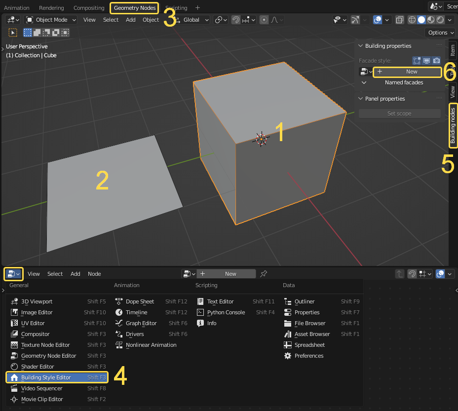
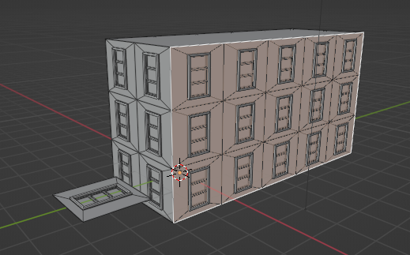

Quick Start
This is brief instruction how to start use the add-on.
{kind=link}
Make sure tha the add-on is installed. The installation process is standard.
Create/don’t remove default cube. It will be Base geometry for future building
Add default plane. It will be a panel.
Go to Geometry nodes workspace.
Instead of Geometry nodes editor choose Building style editor.
Open property panel (press N) in the 3D Viewport editor and open the Building nodes tub.
With the cube being selected press the New button, it will create new building style and apply it to the cube.
{kind=link}
Assign Plane to the Panel node and add extra geometry to it. Now you already can see that the panel was applied to side faces of the cube.
Note
The orientation of the panel and location of its origin is important. Details.
Select cube, go to edit mode and move faces perpendicular to the axis. You will see in real time how the changes effects the appearance of the building. Also you can edit topology of the box but make sure that it meets certain requirements.
